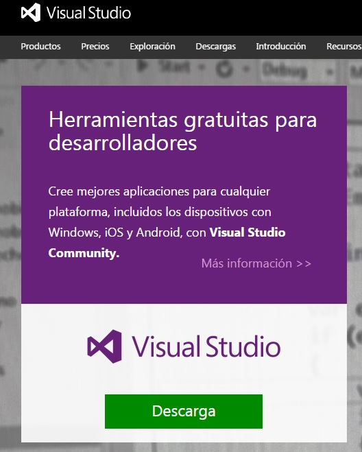
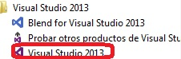
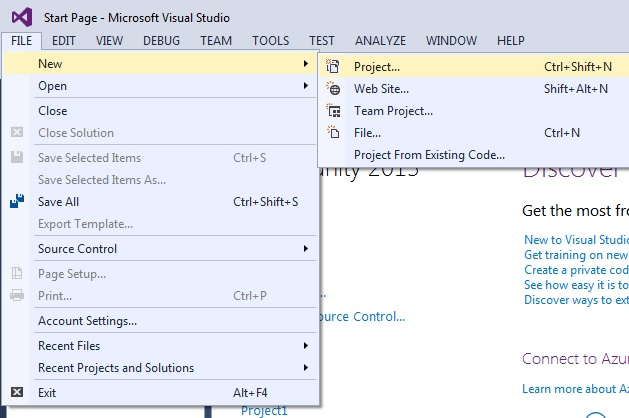
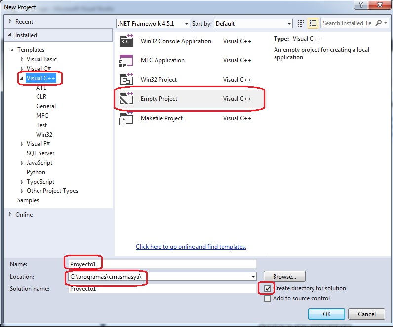
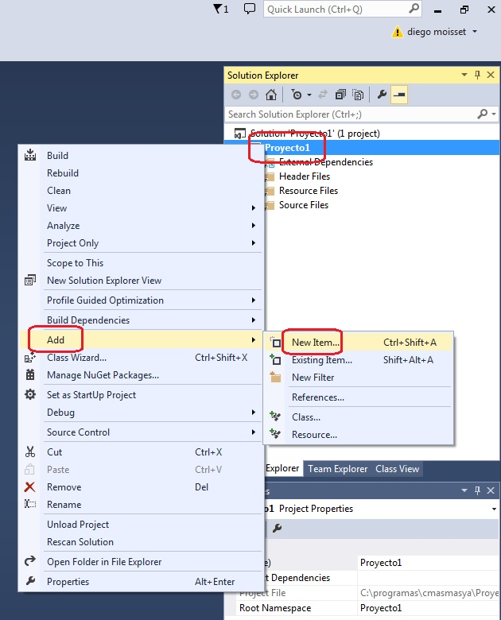
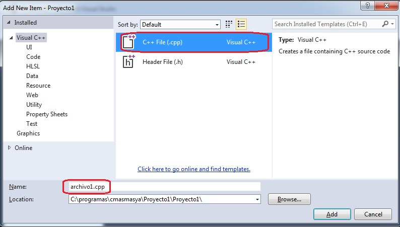
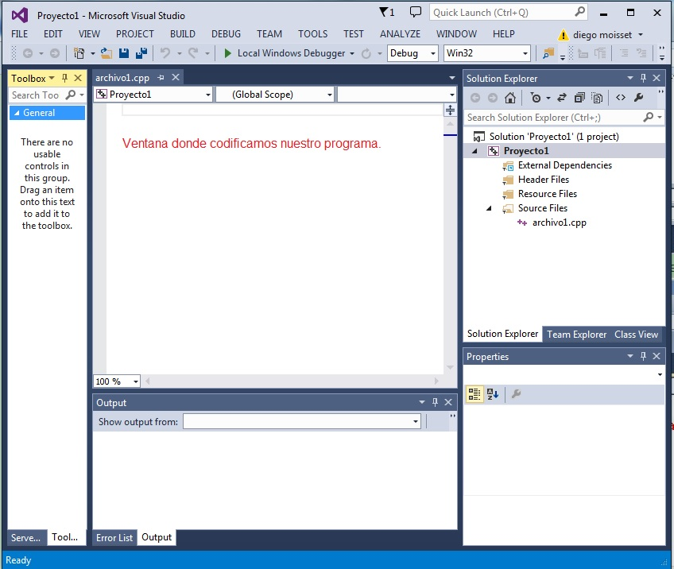

Existen muchos compiladores de C++, tanto para Windows, Mac, Linux etc, nosotros utilizaremos el Visual C++ de Microsoft que lo podemos descargar de aquí.. El Visual Studio Community es gratuito y tiene entre otras herramientas el C++.
No debemos perder de vista que el fin último es realizar un programa de computación que permita automatizar una actividad para que muchos procesos sean desarrollados por la computadora.
El diagrama de flujo es un paso intermedio para facilitarnos la resolución del problema.
El paso siguiente es la codificación del diagrama de flujo en un lenguaje de computación, en nuestro caso emplearemos el lenguaje C++.
Lenguaje de computación: Conjunto de instrucciones que son interpretadas por una computadora para realizar operaciones, mostrar datos por pantalla, sacar listados por impresora, entrar datos por teclado, etc.
Variable: Es un depósito donde hay un valor. Consta de un nombre y pertenece a un tipo.
Para el ejemplo planteado la variable horasTrabajadas almacena la cantidad de horas trabajadas por el operario. La variable valorHora almacena el precio de una hora de trabajo. La variable sueldo almacena el sueldo a abonar al operario.
En el ejemplo tenemos tres variables.
Tipos de variable:
Una variable puede almacenar:
- Valores Enteros (100, 260, etc.)
- Valores Reales (1.24, 2.90, 5.00, etc.)
- Cadenas de caracteres ("Juan", "Compras", "Listado", etc.)
Elección del nombre de una variable:
Debemos elegir nombres de variables representativas. En el ejemplo el nombre horasTrabajadas es lo suficientemente claro para darnos una idea acabada sobre su contenido. Podemos darle otros buenos nombres. Otros no son tan representativos, por ejemplo hTr. Posiblemente cuando estemos resolviendo un problema dicho nombre nos recuerde que almacenamos las horas trabajadas por el operario pero cuando pase el tiempo y leamos el diagrama probablemente no recordemos ni entendamos qué significa hTr.
Hay que tener en cuenta que el entorno de programación "Visual Studio Community" no han sido desarrollados pensando en un principiante de la programación. Lo mismo ocurre con el propio lenguaje C++, es decir su origen no tiene como objetivo el aprendizaje de la programación. Debido a estos dos puntos veremos que a medida que avanzamos con el tutorial muchos conceptos que iremos dejando pendientes se irán aclarando.
Veremos los pasos para la creación de un proyecto en C++.
1 - Ingresemos al "Microsoft Studio Community".

2 - Creación del proyecto. Para esto seleccionamos desde el menú la opción "File" -> "New" -> "Project" (En castellano "Archivo" -> "Nuevo proyecto...")

Aparece un diálogo donde debemos indicar el nombre del proyecto y seleccionar el tipo de proyecto (elegiremos "Proyecto vacío" y le daremos como nombre al proyecto "Proyecto1"), también indicamos el directorio donde se almacenará el proyecto y seleccionamos que trabajaremos con el Visual C++:

Como hemos creado un proyecto vacío debemos crear un archivo donde codificaremos nuestro programa, para esto tipeamos el botón derecho del mouse sobre el nombre del proyecto ("Proyecto1") en la ventana del "Explorador de soluciones" y seleccionamos la opción "Add"->"New Item..." (en castellano "Agregar" -> "Nuevo elemento"):
Aparece un diálogo donde debemos seleccionar la opción de "Archivo C++" y definir el nombre del archivo a crear (lo llamaremos archivo1):
En este momento tenemos todo listo para comenzar a codificar nuestro primer programa:
